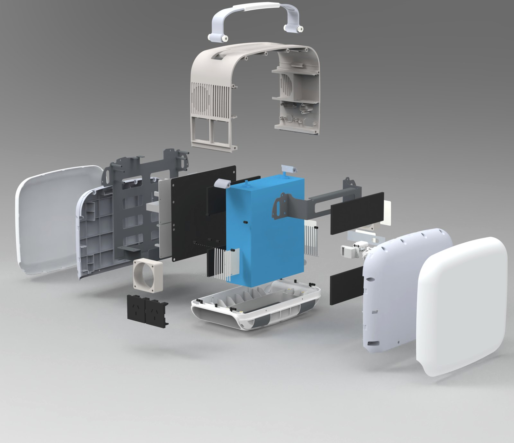
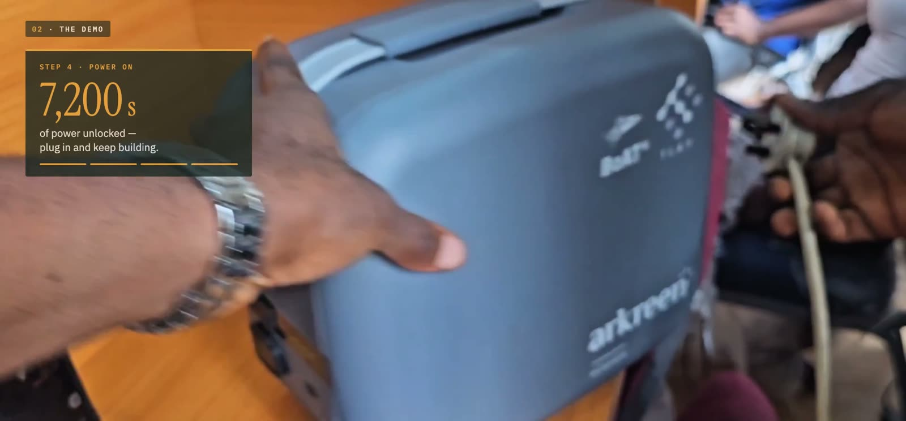

00 · In one minute
The short version.
- Why
- 655 million people still live without electricity. Capital looking for real-world yield can't reach them, because small, scattered energy assets are invisible, costly to service and hard to trust.
- What
- eCandle is a standardized energy node: solar generation, battery storage, metered pay-as-you-go access and a programmable device layer that records every unit of service it delivers.
- How
- Capital builders fund units, local operators deploy and run them, people pay for the power they actually use, and smart contracts record and split the revenue in the open.
- Proof
- It's live today at TAS Hub in Awka, Nigeria, built on the Arkreen network of 300,000+ distributed energy nodes.
01 · Why
Two needs, one gap.
Picture two maps of the world. The first shows where capital sits: deep markets, cheap money and a growing pool of on-chain liquidity looking for something real to do. The second shows where energy demand is most urgent: homes that go dark at sunset, shops that close early, students who can't charge a laptop. The two maps barely overlap.
Nigeria, where eCandle's first live hub runs, is one of the three countries that together hold nearly a third of the world's access gap.1 Meanwhile, stablecoins now move value across borders at internet speed, and they still need a credible path from on-chain liquidity to real-world use. Here are two needs that should fit together, and they sit on opposite sides of a gap.
Why the gap doesn't close on its own
Solar panels and batteries are not the problem. They are cheap, proven and getting better every year. The problem is everything around them.
- Too small to see. One household's power spend is a few cents a day. To distant capital, ten thousand of those look like noise, not an asset.
- Too costly to collect. Gathering tiny payments, reconciling them by hand and reporting to funders eats most of the margin.
- Too hard to trust. A funder abroad can't see whether a unit exists, works or earns, so they assume the worst or stay away.
- Too thin to start. The local operators best placed to run an energy business rarely have the capital to buy their first units.
The unlock
Each of these is a legibility problem. Energy access becomes fundable the moment its smallest unit is standard enough to replicate, instrumented enough to measure and programmable enough to settle by itself. eCandle is built to be that unit.
02 · What
A standardized unit of energy access.
An eCandle node is one physical product that does five jobs. Together they turn electricity into a service that can be sold in tiny amounts, delivered reliably and recorded honestly.
- 01Solar generationCaptures energy where it's needed, with no grid connection.
- 02Battery storageHolds that power for lighting, charging and small-business loads after dark.
- 03Pay-as-you-go accessMetered, smart output lets people pay small amounts, by the charge, by the hour or by shared use.
- 04Local operationsInstalled and maintained by local operators who own the relationship with their community.
- 05On-chain settlementPayments flow into smart contracts, with no central billing and no manual reconciliation.
It is not just a solar battery. It is a programmable energy revenue node, a real-world use for stablecoins that people need every single day.
eCandle 1: the hardware

eCandle 1 starts from a commercially manufactured energy system: a long-life LFP battery, inverter, solar input and production-grade protection. The battery, BMS and inverter stay a certified, sealed safety layer. Above them sits an embedded ESP32, and that's where eCandle's logic runs. It reads the device's state, unlocks output when a payment or an operator rule allows it, and keeps enforcing those rules when the network drops. Full specification →
The Energy Session: one record of service
Every time someone uses an eCandle, the node can produce an Energy Session, a small record of who authorised it, how much energy actually moved and how it ended.
{
"deviceId": "ecandle_001",
"authorisationRef": "payment_or_paygo_ref",
"startMeterWh": 12540,
"endMeterWh": 12865,
"energyDeliveredWh": 325,
"terminationReason": "USER_STOP",
"deviceSignature": "…"
}This is the smallest useful unit of accountability. Everything built on top of it, from operator reports to revenue splits to a funder's dashboard, is derived from that record, not measured again. The schema is open for community review before it's frozen.
Payment-neutral by design
People keep paying the way they already pay: cash through an agent, mobile money, an operator's app or stablecoins. Each method passes through an adapter and becomes the same thing, an authorisation the device understands. Funders, operators and cross-border partners can settle on-chain without turning crypto into a requirement for the person who just wants the lights on. And because the payment layer is an adapter, the loop isn't tied to any single stablecoin or chain.
03 · How
One closed loop. Four steps. Settled by code.
eCandle connects global capital, local operations, real energy demand and stablecoin settlement into one loop that can be copied anywhere off-grid. Every unit's revenue feeds the people who made it possible, and the record of that revenue is open to all of them.
- Crowdfund & co-initiate. On-chain impact crowdfunding and ecosystem partners fund new eCandle units. Capital builders back real hardware, not narratives.
- Deploy through operators. Trusted local operators install units in off-grid homes, small shops and community hubs, then maintain them.
- Access & pay as you go. People use power through pay-as-you-go, rental or shared-use plans, which creates a steady stream of small, recurring payments from real demand.
- Record & distribute on-chain. Smart contracts record, aggregate and distribute payments and usage data. That makes revenue sharing transparent, opens the way to future real-world-asset structures and lets the loop fund its next units.
Who does what
| Role | Brings | Gets |
|---|---|---|
| Global · CapexCapital builders | Upfront capital for the physical units | Transparent, on-chain revenue distributions as their units earn from real use |
| Local · OpexLocal operators | Site selection, installation, maintenance, customer relationships | A share of the cashflow they generate, driven by uptime and service |
| Community · DemandEnd users | Daily demand for light, charging, connectivity and work | Reliable, affordable power, paid in small amounts, only for what they use |
A day in the loop
- 06:30Sun reaches the panel and the battery starts to fill.
- 13:00A shopkeeper runs lights and charges phones for neighbours. Every top-up is a small payment.
- 19:00A student pays for a few hours of power from their phone. The node checks the authorisation and turns on its output.
- 19:00An Energy Session opens and the meter reading is recorded.
- 22:00The session closes with the energy actually delivered: authorised, measured, signed.
- DailyPayments settle and the contract splits revenue between the operator, the funders and maintenance partners, following the project's rules.
- NextFunders see what their units earned, not a quarterly slide deck. The revenue helps fund the next node.
What's verified, and what isn't yet
Credibility comes from saying plainly where the line is. Device-originated records can be linked to transparent on-chain payment and settlement events today. We don't claim that every energy record is already independently verified on-chain. Device signing, meter calibration and proof of renewable charging each need their own trust model, and those are being built in the open.
04 · Proof
Not a promise. Already running.

Live deployment · TAS Hub, Awka, Nigeria
From TAS Hub to a builder’s home.
At Tech and Sun Hubs’ solar-powered container hub at Nnamdi Azikiwe University, builders rent an eCandle by the hour, pay on-chain in stablecoins and take steady power beyond the hub’s walls. The whole flow runs on a real unit: payment, authorisation, activation, power.
“eCandle is like me taking TAS back home.” Solomon, web developer, TAS Hub member
Watch the 4-minute film →What is real today
Available today
- eCandle 1 commercial hardware
- 1,004Wh LFP storage, 300W inverter
- Embedded ESP32 with device-control interface
- Mobile app
- Working on-chain pay-as-you-go flow, live at TAS Hub
In development
- Open ESP32 application runtime
- OpenPAYGO integration for offline access
- Device identity and signed session records
- Developer SDK and interface docs
Roadmap
- Operator fleet console
- More payment adapters
- Compatible-device adapter framework
- Community-built energy apps
05 · Why this is bigger than a battery
A new kind of infrastructure asset.
Trading and remittance are only the beginning. Energy is the most universal recurring demand there is: every day, in every home, everywhere. eCandle gives stablecoins something real, needed and repeatable to do.
Each node is the same loop in miniature. Every new unit adds track record and data, and every operator can grow from revenue. Infrastructure that copies itself scales like software.
Funders don't have to take a report on faith. They can follow sessions, payments and distributions as they happen. Impact becomes a data stream, not a press release.
Payment-neutral adapters, an open session schema and a documented device layer mean the loop doesn't depend on one chain, one stablecoin or one company to keep the lights on.
Every light switched on becomes a line of cashflow that anyone can read. That's how the world’s most underserved energy demand becomes its most transparent investment.
06 · Join the loop
Help light the next street.
The first eCandle deployments are being funded and run now. There's a seat in the loop for each of these roles.
Questions? Write to ecandle@arkreen.com, or start with the eCandle overview.
Notes & disclaimer
- IEA, IRENA, UN Statistics Division, World Bank and WHO, Tracking SDG 7: The Energy Progress Report 2026. Figures are for 2024.
- eCandle network and hardware figures are from Arkreen and the eCandle 1 specification as of October 2026.
This lite paper is for information only. It is not an offer to sell, or a solicitation of an offer to buy, any security, token or other financial product, and nothing in it is investment, legal or tax advice. Descriptions of revenue sharing, distributions and future structures are illustrative. They depend on each project’s rules and on local law, and may change. Product status and roadmap items are forward-looking and may change.